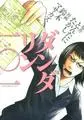
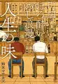
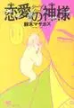

鈴木マサカズ（すずき まさかず）
ダンダリン一〇一

01TBD
マトリズム
ラッキーマイン
銀座からまる百貨店お客様相談室
最果てのサイクロプス
この人のまんがを読むきっかけとなったまんが。超能力者サイ、ユキ姉妹。本当に超能力者がいたらこのまんがのようになるのかな、ユーマの気持ちはあまり描かれていないが人間の本性に幻滅している気持ちはわかる。
ユーマやタデシマは、人間に対して敵意を示すが、もし自身が化け物扱いされてなければ、自分の持つ超能力を人間に役に立つように使っていたのではないかなとも思う。そう考えるとやはり自分の欲望のために超能力者を利用しようとする人や自分と違う人に悪意を持つのが本当の悪なのでは・・・
サイの超能力は、人の心に潜れるという少し珍しいタイプの能力。一種にいい能力かなと思ったけど下手に心を覗くとダメージを受けそう。。
紙も電子も持っているというのが、この作品に対する自分の気持ちです
七匹の侍
TBD
鼠、影を断つ
鼠、江戸を疾る
町田ほろ酔いめし浪漫人生の味

01TBD
恋愛の神様

01TBD
データベース
| タイトル | ISBN | 絵 | 作 | 発行 | URL | 紙 | 電子 | その他1 | その他2 |
|---|---|---|---|---|---|---|---|---|---|
| ダンダリン一〇一 | 9784063729436 | 鈴木マサカズ/とんたにたかし | 講談社 | url | Y | 1818 | |||
| マトリズム （ 1） | 9784537136531 | 鈴木 マサカズ | 日本文芸社 | url | Y | 2267 | |||
| マトリズム （ 2） | 9784537136784 | 鈴木 マサカズ | 日本文芸社 | url | Y | 2268 | |||
| マトリズム （ 4） | 9784537137965 | 鈴木 マサカズ | 日本文芸社 | url | Y | 2875 | |||
| ラッキーマイン（1） | 9784063727494 | 鈴木マサカズ | 講談社 | url | Y | 478 | |||
| ラッキーマイン（2） | 9784063727555 | 鈴木マサカズ | 講談社 | url | Y | 479 | |||
| ラッキーマイン（3） | 9784063727753 | 鈴木マサカズ | 講談社 | url | Y | 480 | |||
| ラッキーマイン（4） | 9784063727920 | 鈴木マサカズ | 講談社 | url | Y | 2107 | |||
| 銀座からまる百貨店お客様相談室（1） | 9784063885583 | 鈴木マサカズ/関根眞一 | 講談社 | url | Y | 95 | |||
| 銀座からまる百貨店お客様相談室（2） | 9784063885712 | 鈴木マサカズ/関根眞一 | 講談社 | url | Y | 2398 | |||
| 銀座からまる百貨店お客様相談室（3） | 9784063886078 | 鈴木マサカズ/関根眞一 | 講談社 | url | Y | 2852 | |||
| 銀座からまる百貨店お客様相談室（4） | 9784063886320 | 鈴木 マサカズ/関根 眞一 | 講談社 | url | Y | 2850 | |||
| 銀座からまる百貨店お客様相談室（5） | 9784063886573 | 鈴木 マサカズ/関根 眞一 | 講談社 | url | Y | 2851 | |||
| 最果てのサイクロプス（1） | 9784408173801 | 鈴木マサカズ | 実業之日本社 | url | Y | Y | 2112 | ||
| 最果てのサイクロプス（2） | 9784408173979 | 鈴木マサカズ | 実業之日本社 | url | Y | Y | 2108 | ||
| 七匹の侍（1） | 9784063820331 | 鈴木マサカズ | 講談社 | url | Y | 2111 | |||
| 七匹の侍（2） | 9784063820560 | 鈴木マサカズ | 講談社 | url | Y | 29 | |||
| 七匹の侍（3） | 9784063820744 | 鈴木マサカズ | 講談社 | url | Y | 28 | |||
| 鼠、影を断つ | 9784047302372 | 赤川次郎/鈴木マサカズ | KADOKAWA | url | Y | 2412 | |||
| 鼠、江戸を疾る | 9784047298583 | 赤川次郎/鈴木マサカズ | KADOKAWA | url | Y | 2183 | |||
| 町田ほろ酔いめし浪漫人生の味 | 9784537134049 | 鈴木マサカズ | 日本文芸社 | url | Y | 2580 | |||
| 恋愛の神様 | 9784537130355 | 鈴木マサカズ | 日本文芸社 | url | Y | 1846 |